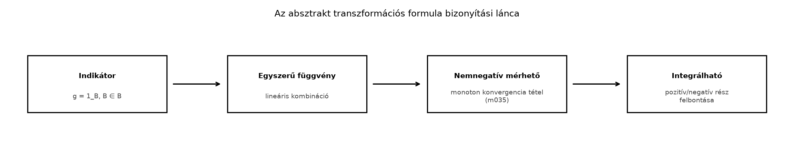

Amikor egy mértéktéren értelmezett függvény segítségével
„áthelyezzük” a pontokat egy másik halmazba, a mérték is áthelyeződik.
Ez a helyzet például a valószínűségszámításban: ha
egy valószínűségi változó, akkor az
eseménytéren adott
valószínűségi mérték helyett gyakran azt kérdezzük, mi a valószínűsége
annak, hogy
értéke egy
halmazba esik. Pontosan ez a kérdés vezet a képmérték fogalmához.
Hasonló kérdés a Lebesgue-mértéknél: ha
egy lineáris átskálázás, akkor hogyan változik egy halmaz hossza, és
hogyan lehet
-et
az eredeti
integráljára visszavezetni?
10.9.2 Szemléletes kép
Képzeljünk el tömegpontokat az
halmazon. Legyen az
pont tömege
,
a
ponté
,
a
ponté
.
Ha az
leképezés az
-et
-ba,
a
-t
és a
-at
pedig
-be
viszi, akkor az
-on
a tömeg úgy oszlik el, hogy az
pont tömege
,
a
ponté pedig
.
Az
-beli
tömegeloszlás az
-beli
tömegeloszlás „előretoltja”.
A bizonyítási stratégia a Lebesgue-integrál felépítésének lépésein
halad:

Az absztrakt transzformációs formula
bizonyítási lánca - A Lebesgue-integrál felépítésének lépésein
haladunk.
10.9.3 Definíció
Legyen
mértéktér,
mérhető tér, és
mérhető függvény.
Definíció. Az
által előretolt mérték, más néven képmérték (pushforward measure) az az
halmazfüggvény, amelyet
definiál. A mérhetőségi feltétel biztosítja, hogy
,
tehát a jobb oldal értelmes.
Állítás. A fenti
mérték a
mérhető téren.
Bizonyítás. Először is
.
Ha
páronként diszjunkt halmazok, akkor az ősképeik is páronként
diszjunktak, hiszen ha
,
akkor
.
Ezért
Itt felhasználtuk, hogy az őskép felcserélhető az unióval. ∎
Példa. Legyen
,
,
a Lebesgue-mérték, és
.
Ekkor
-en
a képmértéket az intervallumokon könnyen kiszámíthatjuk: ha
,
akkor
Ez azt mutatja, hogy
nem egyenletesen oszlik el, hanem sűrűbb a
közelében. Később, a Radon–Nikodym-tétel
keretében látjuk majd, hogy ennek a mértéknek a sűrűségfüggvénye
a
intervallumon.
Ha
,
akkor az integrál a képmérték szerint
Ugyanez a transzformációs formulával közvetlenül:
Ellenpélda. Ha
nem mérhető, akkor a képmérték nem is definiálható. Ha viszont
konstans, például
minden
esetén, akkor
Ez egy mérték, de nem a Dirac-mérték
,
hanem annak
-szerese.
A konstans leképezés képmértéke
,
ami csak akkor
,
ha
.
10.9.5 Az absztrakt transzformációs
formula
Tétel. Legyen
mértéktér,
mérhető tér,
mérhető, és
mérhető. Ekkor
Ha
integrálható
szerint, akkor
integrálható
szerint, és az egyenlőség ugyanígy fennáll.
Bizonyítási terv. A Lebesgue-integrál felépítését
követjük: először indikátorfüggvényekre igazoljuk, majd egyszerű
függvényekre, végül a monoton konvergencia tétellel nemnegatív
függvényekre. Az integrálható eset ezután pozitív és negatív részekre
bontással következik.
Bizonyítás.
Indikátor. Legyen
,
ahol
.
Ekkor
Mivel
pontosan akkor, ha
,
vagyis
,
ezért
.
Egyszerű függvény. Legyen
nemnegatív egyszerű függvény. A mérték szerinti integrál linearitása és
az előző lépés alapján
Integrálható függvény. Ha
valós értékű és integrálható, akkor
,
ahol
és
.
A nemnegatív esetet
-ra
és
-ra
alkalmazva, majd kivonva kapjuk a formulát. Komplex értékű
esetén külön kezeljük a valós és képzetes részt, azokat pozitív és
negatív részekre bontva. Az integrálhatóság megőrződése abból
következik, hogy
,
és a nemnegatív formulát
-re
alkalmazzuk. ∎
10.9.6 Lineáris helyettesítés a
Lebesgue-mértéken
Most a Lebesgue-mérték eltolás- és skálázásinvarianciáját használjuk.
Emlékeztetőül a A Lebesgue-mérték és
tulajdonságai alfejezetből: ha
,
akkor
,
és ha
,
akkor
.
Tétel. Legyen
,
,
és
.
Ekkor
Következésképpen minden olyan
mérhető függvényre, amelyre a képletek értelmesek,
Bizonyítás. Tetszőleges
Lebesgue-mérhető halmazra
Itt először a
-val
való skálázás, majd a
-vel
való eltolás invarianciáját használtuk. Az absztrakt transzformációs
formula ezután adja az integrálos alakot. ∎
Előkészítés a Fourier-analízishez. A lineáris
formula közvetlenül előkészíti a Fourier-transzformált algebrai
szabályait. Ha például
és
,
akkor formálisan
Ezt a Algebrai tulajdonságok alfejezetben
igazoljuk pontosan; a most tanult lineáris helyettesítés adja hozzá a
faktort.
10.9.7 Képmérték a
valószínűségszámításban
Legyen
valószínűségi mértéktér, és
mérhető függvény. Az
eloszlása (distribution) éppen a
képmértéke:
Ha
mérhető, akkor a transzformációs formula szerint
Példa. Legyen
exponenciális eloszlású valószínűségi változó, azaz
sűrűségfüggvénye
.
Ekkor
Itt
,
ami a sűrűségfüggvény fogalmát használja; ennek pontos mértékelméleti
tárgyalása a Radon–Nikodym-tétel alfejezetben
következik.
10.9.8 Python-illusztráció
Az alábbi kód a lineáris helyettesítést Riemann-összegekkel
szemlélteti. Ez numerikus közelítés, nem bizonyítás; a hibát
diszkretizáció és a véges intervallumra való csonkolás okozza.
import numpy as npdef g(y):return np.exp(-y**2)a, b =2.0, 1.0# Bal oldal: int_{-5}^{5} g(a*x + b) dxx = np.linspace(-5.0, 5.0, 200001)dx = x[1] - x[0]bal = np.sum(g(a * x + b)) * dx# Jobb oldal: (1/|a|) * int_{-9}^{11} g(y) dyy = np.linspace(-9.0, 11.0, 400001)dy = y[1] - y[0]jobb = np.sum(g(y)) * dy /abs(a)print(f"bal = {bal:.5f}")print(f"jobb = {jobb:.5f}")print(f"eltérés = {abs(bal - jobb):.2e}")
Várt kimenet (kerekítve):
bal = 0.88623
jobb = 0.88623
eltérés = 1.2e-05
10.9.9 Tipikus hibák és
félreértések
Abszolútérték hiánya. A lineáris
helyettesítésben sokan
-t
írnak
helyett. A Riemann-integrálban a határok megfordulása miatt van előjel,
de a Lebesgue-mérték orientálatlan, ezért mindig
szerepel.
Inverz függvény és őskép keverése. A képmérték
definíciójában
ősképet jelent, nem inverz függvényt. Az
nem kell, hogy injektív vagy szürjektív legyen. Ha
nem injektív, akkor a képmérték több pont tömegét is
összeadhatja.
Konstans leképezés és Dirac-mérték. Ha
konstans, akkor
.
Ez csak akkor
,
ha
.
Végtelen mértéknél például
.
Mérhetőség hiánya. Ha
nem mérhető az
és
σ-algebrák szerint, akkor előfordulhat, hogy
,
így a képmérték nem definiálható.
10.9.10 Feladatok
1. feladat (fogalmi). Legyen
,
,
,
és
a következő:
,
,
.
Határozd meg az
képmértéket.
2. feladat (számolási). Legyen
és
.
Számítsd ki a
integrált mind a halmaz hosszával, mind a lineáris helyettesítési
formulával.
3. feladat (bizonyítási). Bizonyítsd be, hogy ha
egyszerű függvény, akkor
4. feladat (alkalmazás). Legyen
Bernoulli-eloszlású valószínűségi változó, azaz
és
.
Add meg a
eloszlást, és számítsd ki az
várható értéket a képmérték szerinti integrállal.
10.9.11 Megoldások
1. feladat. A képmérték értékei az egyes
pontokon:
Ezért
.
2. feladat. Először közvetlenül:
így
A lineáris helyettesítéssel,
és
miatt:
3. feladat. Legyen
nemnegatív egyszerű függvény, ahol
és
.
Ekkor
Másrészt
ezért
A két oldal tehát egyenlő.
4. feladat. A
eloszlás a
képmértéke:
Ezért
.
A várható érték:
10.9.12 Rövid összefoglaló
Legyen
mértéktér,
mérhető tér, és
mérhető. A képmérték definíciója:
Ez valóban mérték. Az absztrakt transzformációs formula szerint
minden nemnegatív mérhető
-re
és integrálható
-re
is érvényes. Ha
,
és
,
akkor a Lebesgue-mértékre
Az alfejezet klasszikus mértékelméleti eredmény, amely a hivatkozott
tankönyvek stabil, közös anyagához tartozik. A források konkrét
oldalszámaira és tételszámaira nem hivatkozunk, mert azok ellenőrzéséhez
nem állt rendelkezésre közvetlen szöveg. A Python-illusztráció numerikus
közelítés, nem bizonyítás.